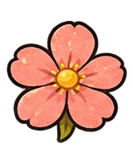

MISERY & CO.Palm Garden
Six growing beds · Hand-gesture gardening◌ Sow☂ Rain♧ Grow✿ Harvest
1 / 6Pinch · ReleasePoint the light at a bed, Pinch, then release
Camera is off
Camera video stays on this device
Evening Bellflower × 0Garden progress saves automaticallyPoint at a bed and pause to select · Relax your hand before switching beds